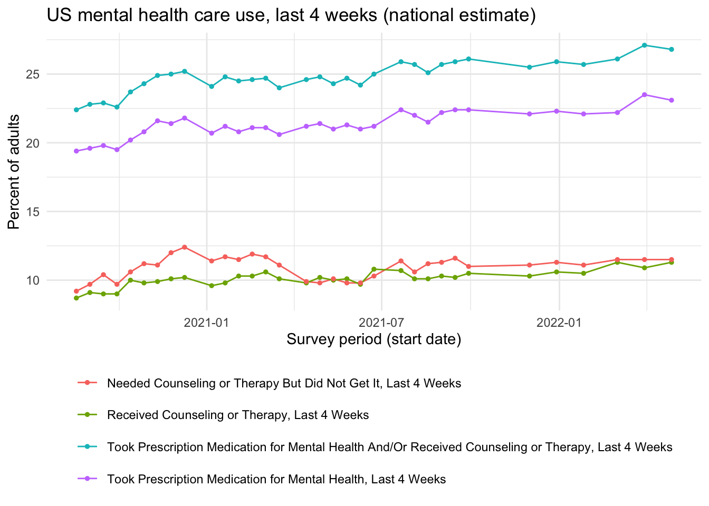
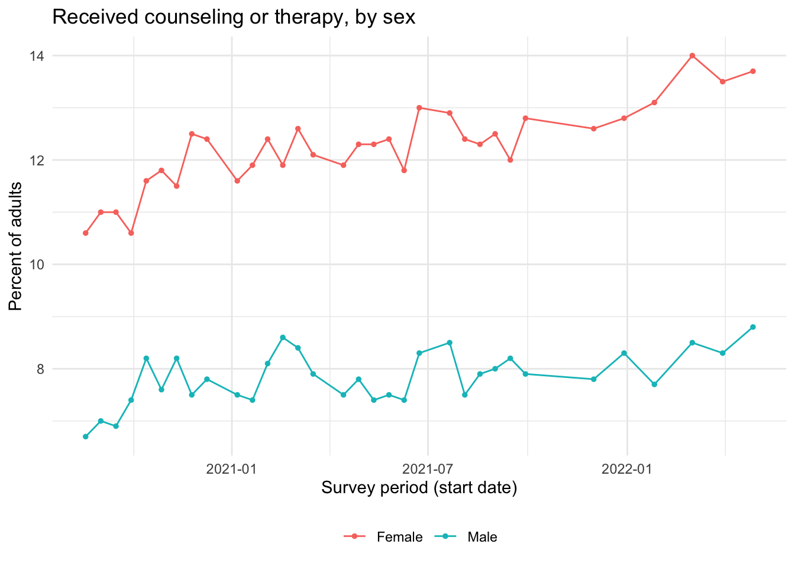

The following objects are masked from 'package:stats':
filter, lag
The following objects are masked from 'package:base':
intersect, setdiff, setequal, union
Code
library(ggplot2)library(here)
here() starts at /Users/cedric/StatProg2-Group-Project
Code
# Cleaned mental-health data (survey-window dates already parsed in 02_clean.R)data <-read_csv(here("data", "processed", "mental_health_clean.csv"),show_col_types =FALSE)
Structure & summary
Code
print("== Overall shape ==")
[1] "== Overall shape =="
Code
dim(data)
[1] 10404 17
Code
print("== Indicators ==")
[1] "== Indicators =="
Code
unique(data$Indicator)
[1] "Received Counseling or Therapy, Last 4 Weeks"
[2] "Needed Counseling or Therapy But Did Not Get It, Last 4 Weeks"
[3] "Took Prescription Medication for Mental Health, Last 4 Weeks"
[4] "Took Prescription Medication for Mental Health And/Or Received Counseling or Therapy, Last 4 Weeks"
print("== How many time periods and geographies are covered ==")
[1] "== How many time periods and geographies are covered =="
Code
length(unique(data$`Time Period`))
[1] 34
Code
length(unique(data$State))
[1] 52
Code
print("== Date range (start_date parsed in cleaning) ==")
[1] "== Date range (start_date parsed in cleaning) =="
Code
range(data$start_date, na.rm =TRUE)
[1] "2020-08-19" "2022-04-27"
Code
print("== Missing values: estimates suppressed for reliability reasons ==")
[1] "== Missing values: estimates suppressed for reliability reasons =="
Code
sum(is.na(data$Value))
[1] 490
Highest average percentage subgroups for each indicator:
Code
for (ind inunique(data$Indicator)) { data |>filter(Indicator == ind, !is.na(Value)) |>group_by(Subgroup) |>summarize(avg =mean(Value, na.rm =TRUE), n =n(), .groups ="drop") |>arrange(desc(avg)) |>head(10)|>print()}
# A tibble: 10 × 3
Subgroup avg n
<chr> <dbl> <int>
1 Transgender 37.0 12
2 Bisexual 27.0 12
3 Gay or lesbian 19.7 12
4 With disability 19.6 18
5 Experienced symptoms of anxiety/depression in past 4 weeks 18.3 33
6 District of Columbia 18.1 33
7 18 - 29 years 15.2 33
8 Massachusetts 14.9 33
9 30 - 39 years 14.5 33
10 Rhode Island 14.2 33
# A tibble: 10 × 3
Subgroup avg n
<chr> <dbl> <int>
1 Transgender 39.4 12
2 Bisexual 31.0 12
3 Experienced symptoms of anxiety/depression in past 4 weeks 25.3 33
4 With disability 24.1 18
5 Gay or lesbian 20.4 12
6 18 - 29 years 19.8 33
7 Non-Hispanic, other races and multiple races 16.4 33
8 30 - 39 years 15.6 33
9 Oregon 14.4 33
10 Utah 13.8 33
# A tibble: 10 × 3
Subgroup avg n
<chr> <dbl> <int>
1 Transgender 44.2 12
2 With disability 42.7 18
3 Bisexual 38.3 12
4 Experienced symptoms of anxiety/depression in past 4 weeks 35.9 33
5 Gay or lesbian 33.1 12
6 West Virginia 28.8 33
7 Cis-gender female 27.9 12
8 Kentucky 27.4 33
9 Arkansas 26.7 33
10 Female 26.6 33
# A tibble: 10 × 3
Subgroup avg n
<chr> <dbl> <int>
1 Transgender 54.5 12
2 With disability 46.4 18
3 Bisexual 46.4 12
4 Experienced symptoms of anxiety/depression in past 4 weeks 41.0 33
5 Gay or lesbian 39.1 12
6 Cis-gender female 32.1 12
7 West Virginia 30.7 33
8 Female 30.7 33
9 Utah 29.8 33
10 Kentucky 29.7 33
Plot — national trend over time
Code
national <- data |>filter(Group =="National Estimate", State =="United States") |>filter(!is.na(Value))ggplot(national, aes(x = start_date, y = Value, colour = Indicator)) +geom_line() +geom_point(size =1) +labs(title ="US mental health care use, last 4 weeks (national estimate)",x ="Survey period (start date)",y ="Percent of adults",colour =NULL ) +theme_minimal() +theme(legend.position ="bottom") +guides(colour =guide_legend(nrow =4))

Plot — between-group comparisons
Code
by_sex <- data |>filter( Group =="By Sex", State =="United States", Indicator =="Received Counseling or Therapy, Last 4 Weeks",!is.na(Value) )by_age_medication <- data |>filter( Group =="By Age", State =="United States", Indicator =="Took Prescription Medication for Mental Health, Last 4 Weeks",!is.na(Value) )ggplot(by_sex, aes(x = start_date, y = Value, colour = Subgroup)) +geom_line() +geom_point(size =1) +labs(title ="Received counseling or therapy, by sex",x ="Survey period (start date)",y ="Percent of adults",colour =NULL ) +theme_minimal() +theme(legend.position ="bottom")

Code
ggplot(by_age_medication, aes(x = start_date, y = Value, colour = Subgroup)) +geom_line() +geom_point(size =1) +labs(title ="Took Prescription Medication for Mental Health, by Age",x ="Survey period (start date)",y ="Percent of adults",colour =NULL ) +theme_minimal() +theme(legend.position ="bottom")